Abstract
Depth from Defocus (DFD) suggests a simple optical set-up to recover the shape of a scene through imaging with shallow depth of field. Although numerous methods have been proposed for DFD, less attention has been paid to the particular problem of alignment between the captured images. The inherent shift-variant defocus often prevents standard registration techniques from achieving the accuracy needed for successful shape reconstruction. In this paper, we address the DFD and registration problem in a unified framework, exploiting their mutual relation to reach a better solution for both cues. We draw a formal connection between registration and defocus blur, find its limitations and reveal the weakness of the standard isolated approaches of registration and depth estimation. The solution is approached by energy minimization. The efficiency of the associated numerical scheme is justified by showing its equivalence to the celebrated Newton-Raphson method and proof of convergence of the emerged linear system. The computationally intensive approach of DFD, newly combined with simultaneous registration, is handled by GPU computing. Experimental results demonstrate the high sensitivity of the recovered shapes to slight errors in registration and validate the superior performance of the suggested approach over two, separately applying registration and DFD alternatives.
Registration under Defocus
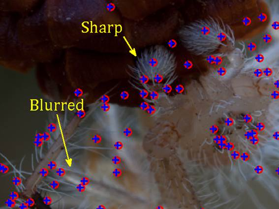
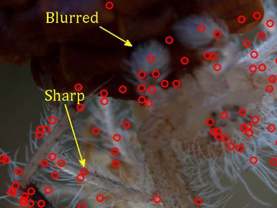
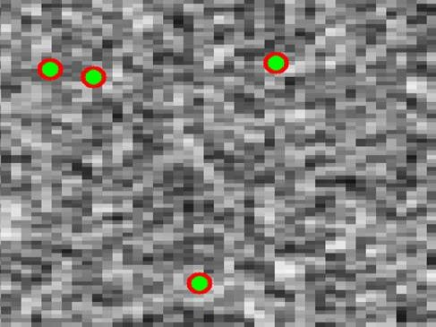
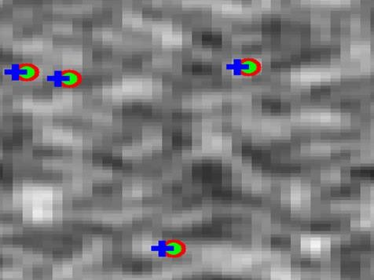
Above: The blue cross and red circles show the difference between SIFT registration (circles) and our approach (plus sign). For impact of this discrepancy on the recovered depth please refer to the paper.
Real Data
Exampels and thier depth maps
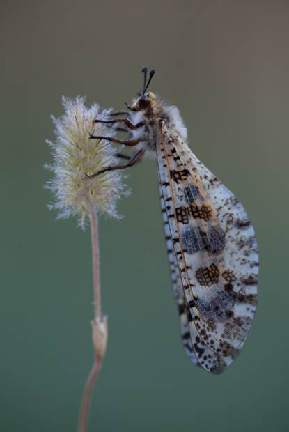Antlion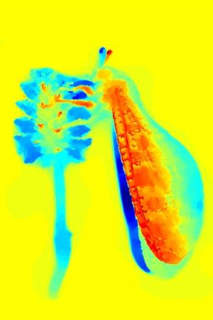
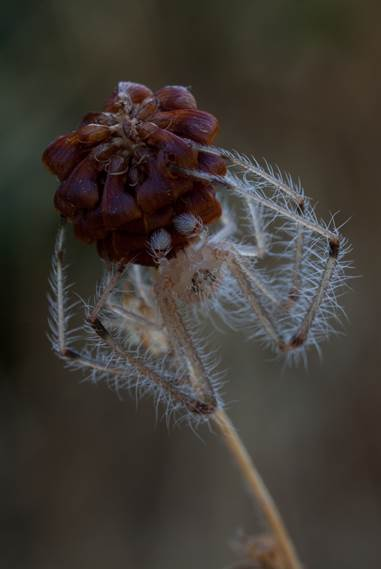Spider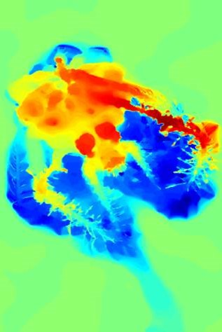
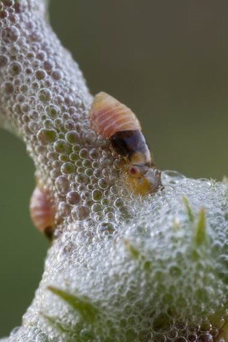Aphrophoridaes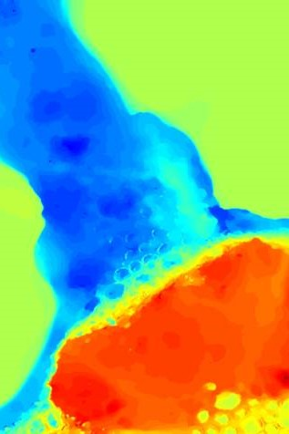
Pseudo-Radiance
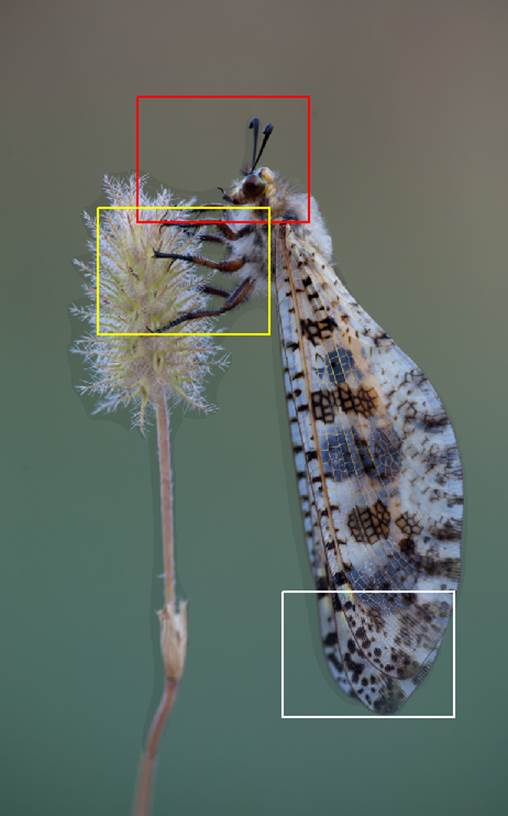Antlion
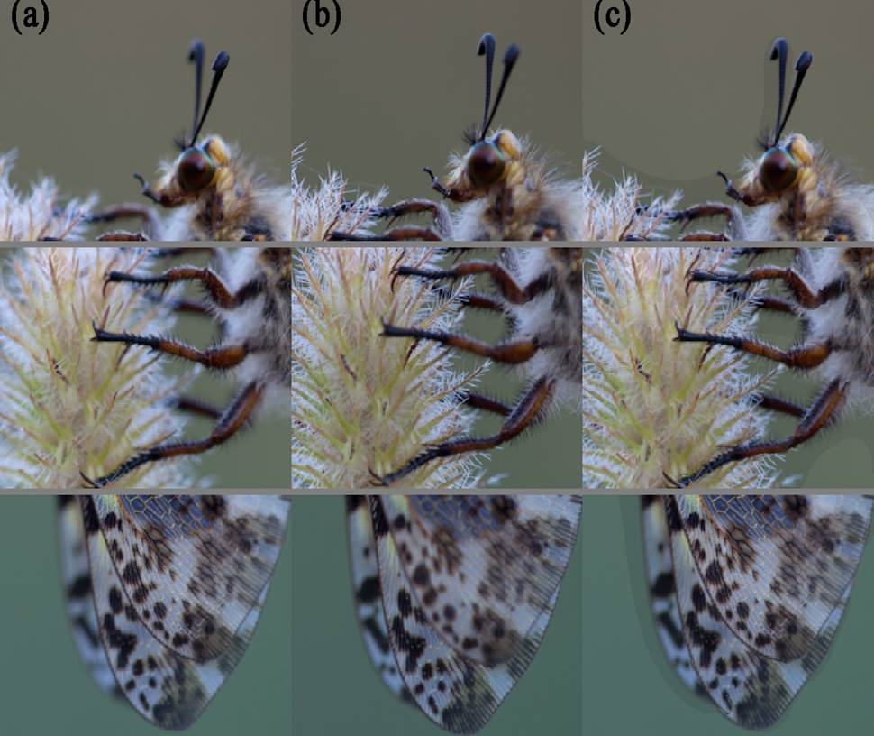Near FocusFar FocusCombined Focus
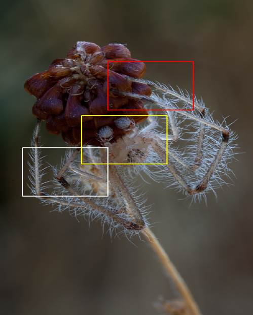Spider
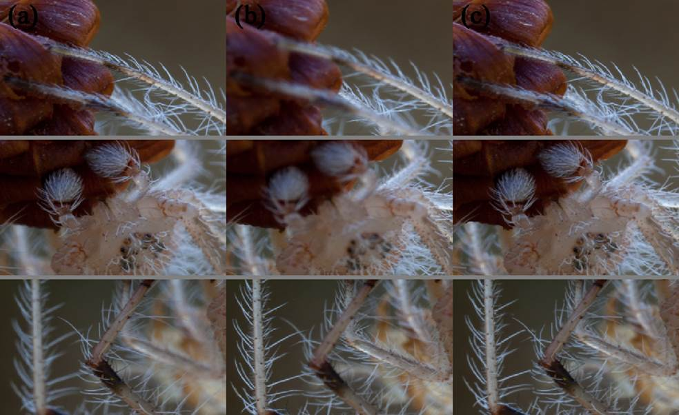Near FocusFar FocusCombined Focus
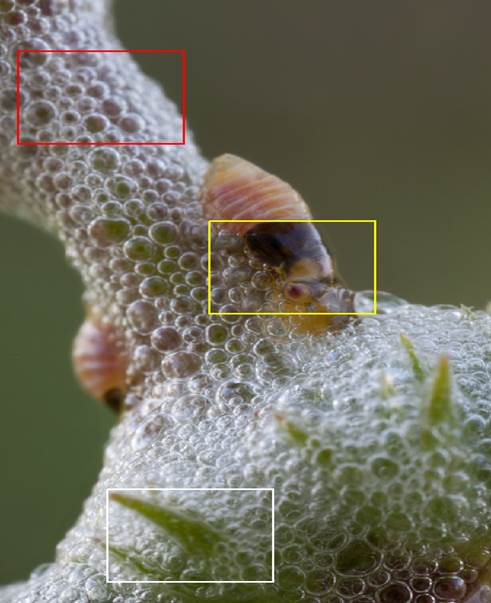Aphrophoridaes
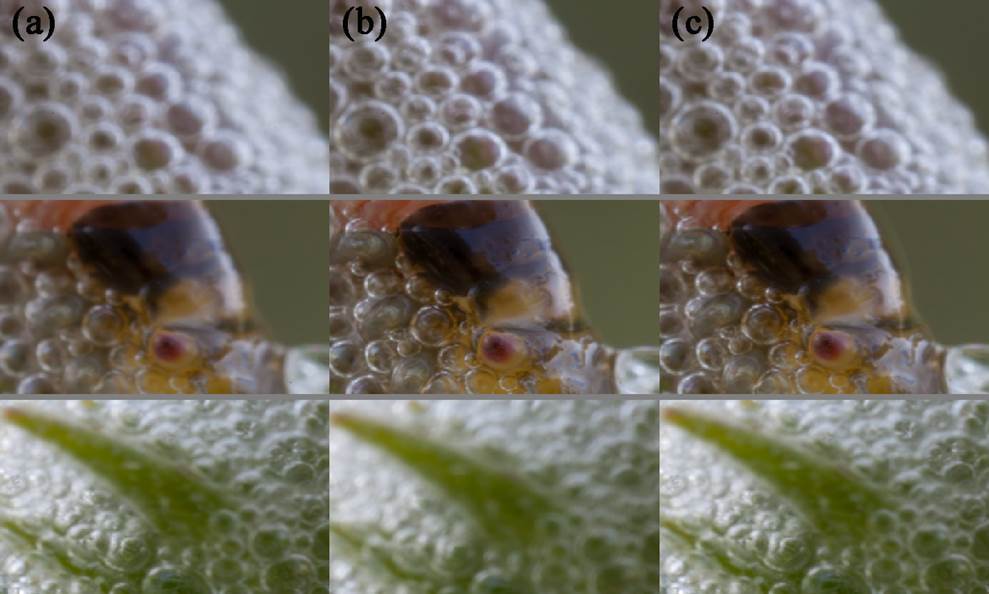Near FocusFar FocusCombined Focus
3D Render and Animations
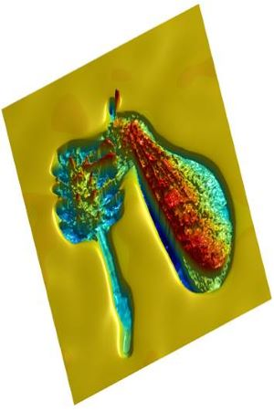Antlion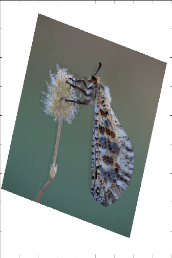
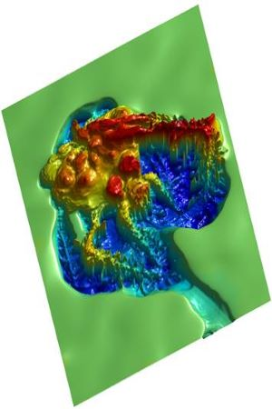Spider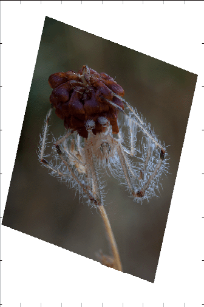
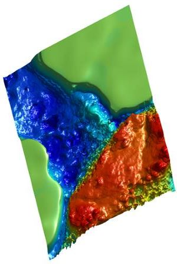Aphrophoridaes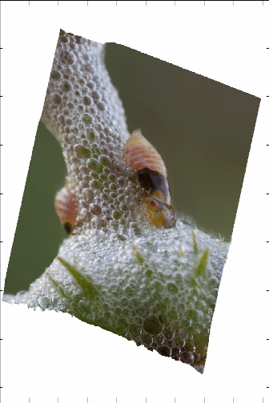
Data
The above dataset used for DFD is available for non-commercial research. Please contact me at benari.rami@gmail.com to receive access to the data. I kindly ask to acknowledge the use of this data and cite, “R. Ben-Ari, A Unified Approach for Registration and Depth in Depth from Defocus, IEEE TPAMI, 36(6), pp. 1041-1055, 2014”.
Imaging Parameters
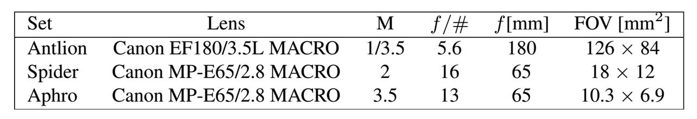
Acknowledgment: Images are courtesy of Ilia Lutsker.